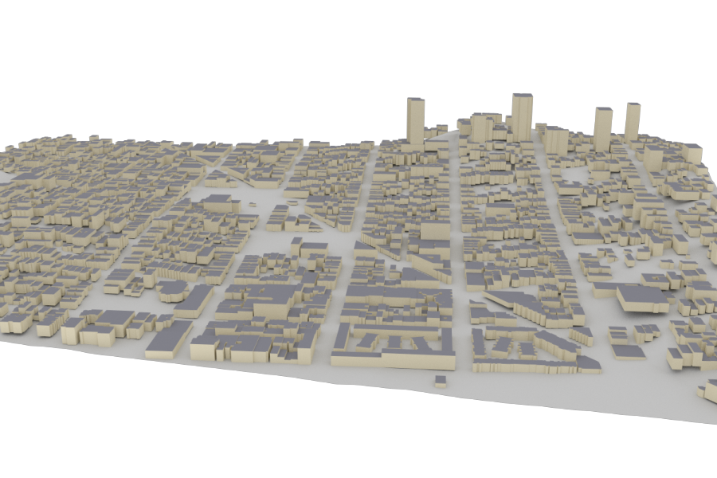
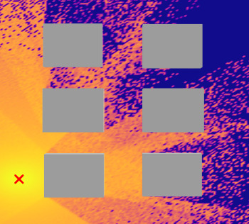
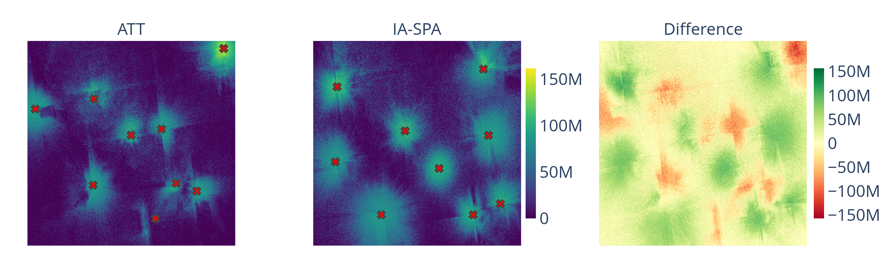
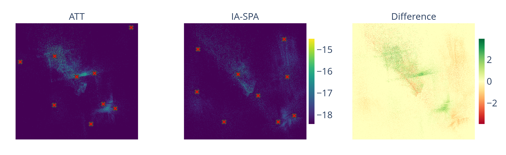
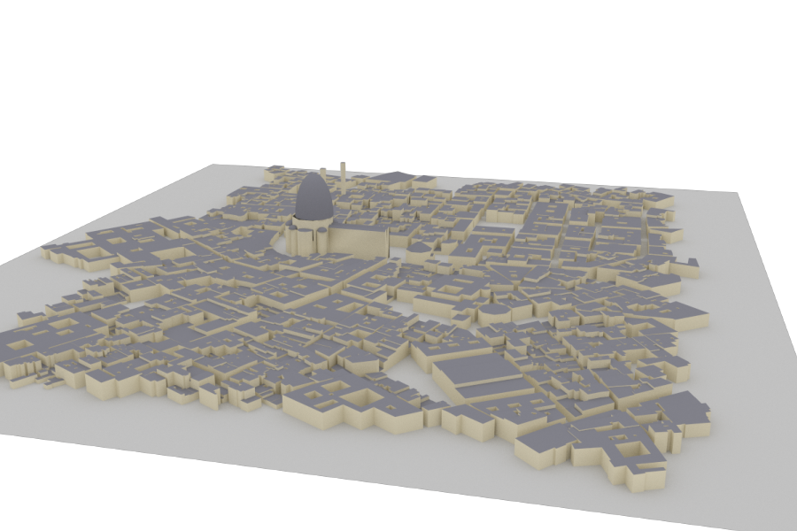
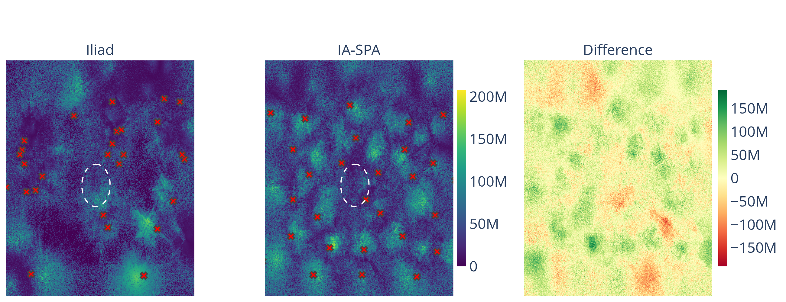
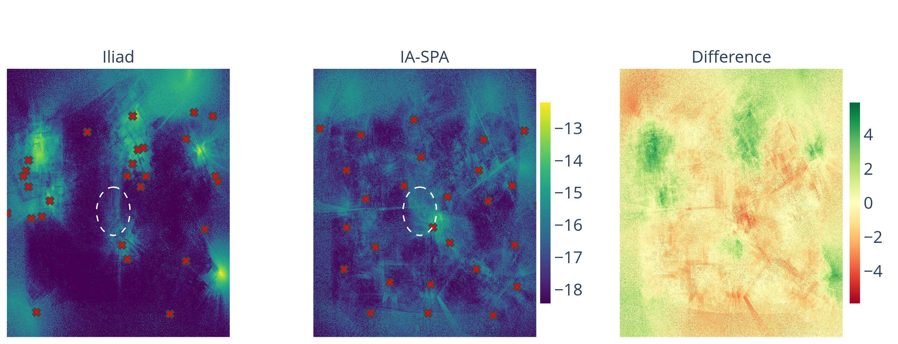
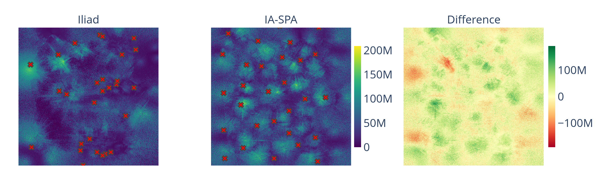
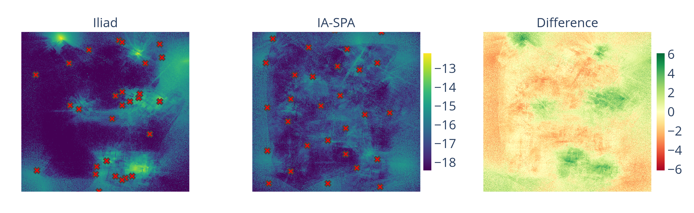

Optimal Transmitter Placement in Realistic Urban Environments for 6G deployment

High-fidelity 3D model of San Francisco used for ray-tracing simulations.
Overview
Imagine you are a telecom engineer tasked with placing a handful of wireless towers across a dense city like San Francisco. Where should they go? Place them poorly and whole neighborhoods lose signal; place them naively and towers drown each other out with interference. This project answers that question with mathematics.
We develop a rigorous framework that treats the tower placement problem as a mathematical optimization. Using physics-accurate ray tracing, we simulate exactly how radio signals bounce off real buildings, diffract over rooftops, and scatter through glass and concrete. On top of this realistic propagation model, we prove that our objective has a special mathematical property called submodularity — a diminishing-returns structure that guarantees our greedy placement algorithm (IA-SPA) always finds a solution within a provable factor of optimal.
Tested against the real-world tower deployments of AT&T and T-Mobile in San Francisco, IA-SPA achieves up to 70% higher mean data rates and slightly improved interference levels (2% lower interference) using the same number of towers.
1. High-Fidelity Signal Propagation
Standard placement heuristics often rely on simplified "disk" models. Our method utilizes Sionna RT to perform site-specific ray tracing. This accounts for:
- Diffuse scattering and specular reflections from building facades.
- Material-specific attenuation (e.g., concrete vs. glass).
- Complex 3D diffraction over rooftops (Knife-edge diffraction).

2. The Objective Functional \(S(T)\)
We consider the problem of optimally placing a set of transmitters \(T = \{t_1, \dots, t_n\} \subset \Omega\) in a physical environment \(\Omega \subseteq \mathbb{R}^n\), where signal propagation is governed by a spatially varying medium \(\mu(x)\). Each location \(y \in \Omega\) receives signal contributions from all transmitters through a propagation model \(P(y,x)\).
A natural way to model wireless performance is through the Signal-to-Interference-and-Noise Ratio (SINR), where each user connects to the strongest transmitter while treating all others as interference. However, this leads to a highly non-linear coupling between transmitters:
\[ \text{SINR}(y, T) = \frac{\max_{t \in T} P(y, t)} {\sum_{t \in T} P(y, t) - \max_{t \in T} P(y, t) + \sigma^2} \]
While physically accurate, this formulation induces a non-convex optimization landscape with many local optima due to the fractional structure and the max–sum coupling between transmitters. As a result, direct optimization of SINR-based objectives is computationally intractable at scale and lacks global optimality guarantees.
To overcome this challenge, we introduce a family of aggregated surrogate measures for network quality: \(\mathcal{P}_{\text{MAX}}(y,T)\) and \(\mathcal{P}_{\text{SUM}}(y,T)\). These proxies decouple interference effects from the optimization structure while preserving the spatial behavior of signal accumulation.
We then define a spatially aggregated objective functional over the environment:
\[ \mathcal{S}(T) = \mathbb{E}_{Y \sim f}\left[\bar{W}(\mathcal{P}(Y, T))\right] \]
where \(f(y)\) is a spatial density encoding region importance and \(\bar{W}(\kappa) = \int_0^\kappa w(s)\,ds\) is the anti-derivative of a monotone utility function \(w\). This formulation plays a central role in our framework: it transforms the original interference-coupled SINR objective into a structured functional that is significantly more amenable to optimization.
We formulate the transmitter placement problem as a constrained combinatorial optimization over the objective functional \(\mathcal{S}(T)\). Depending on the deployment setting, we consider two equivalent formulations. In the first, we seek the smallest number of transmitters required to achieve a target network quality:
\[ \min_{T \subseteq \Omega} |T| \quad \text{s.t.} \quad \mathcal{S}(T) \geq \beta. \]
In the second formulation, we assume a fixed budget on the number of available transmitters and instead maximize achieved network quality:
\[ \max_{T \subseteq \Omega} \mathcal{S}(T) \quad \text{s.t.} \quad |T| \leq \beta. \]
These two problems are dual perspectives of the same underlying trade-off between deployment cost and achieved network performance.
A key theoretical contribution of this work is that, under mild assumptions on concavity of \(\bar{W}\), the continuous relaxation of this problem becomes a convex optimization problem. Intuitively, the concavity of \(\bar{W}\) smooths the diminishing marginal utility of signal accumulation, while preserving the essential spatial structure of wireless propagation. This yields a unique globally optimal solution in the continuous domain, which can then be discretized to guide transmitter placement.
Furthermore, we show that \(\mathcal{S}(T)\) is monotone submodular. This implies a natural diminishing returns property: the marginal gain of adding a new transmitter decreases as the existing set \(T\) grows. This structure enables efficient greedy optimization algorithms with a provable approximation guarantee of at least \((1 - 1/e)\), providing both scalability and strong theoretical performance bounds.
3. IA-SPA: Interference-Aware Submodular Placement
Placement isn't just about coverage; it's about managing interference. IA-SPA (Algorithm 1) specifically targets areas where the Signal-to-Interference-plus-Noise Ratio (SINR) is lowest, ensuring robust "edge-of-cell" performance.
4: Let \(\Omega_{\epsilon} = \{y \in \Omega \mid \mathcal{G}(y \vert T) \geq (1-\epsilon)\max_{z \in \Omega} \mathcal{G}(z \vert T)\}\).
5: Choose \(x^* \in \Omega_{\epsilon}\) uniformly at random.
6: \(T.\text{append}(x^*)\)
4. Case Study: San Francisco
To establish a realistic baseline, we utilized building footprint data and existing tower locations for major carriers (AT&T, and T-Mobile) sourced from open-source network datasets. This allows us to compare our IA-SPA optimized placement directly against real-world engineering deployments in a dense 3D environment.
High-fidelity 3D model of San Francisco used for ray-tracing simulations.
Quantitative Comparison against Real-World Baselines
The following table summarizes the performance of IA-SPA compared to the average of existing carrier deployments in the same geographical area.
| AT&T Scenario | T-Mobile Scenario | |||||
|---|---|---|---|---|---|---|
| Throughput [MBps] | Reference | IA-SPA | Change (%) | Reference | IA-SPA | Change (%) |
| Mean Rate | 21.17 | 36.12 | +70.62% | 10.06 | 31.72 | +215.49% |
| Std. Deviation | 26.90 | 29.61 | +10.09% | 20.24 | 29.75 | +47.01% |
| Max Rate | 162.00 | 125.72 | −22.39% | 154.24 | 125.72 | −18.49% |
| Edge (5% pct.) | 3.57 | 8.38 | +134.58% | 1.11 | 9.55 | +758.39% |
| Interference [nW] | ||||||
| Mean Interf. | 2.24 | 2.19 | −2.04% | 17.54 | 1.11 | −93.70% |
| Std. Deviation | 11.53 | 8.58 | −25.57% | 216.76 | 5.22 | −97.59% |
| Max Interf. | 495.86 | 473.93 | −4.42% | 20491.9 | 214.04 | −98.96% |
Geometric Visualization
Visualization of acchieved Coverage in San Francisco compared to Baseline

Visualization of Interference in San Francisco compared to Baseline

5. Case Study: Florence
For the Florence environment, we demonstrate the algorithm's ability to handle exclusionary zones (historical landmarks) and its performance in a continuous deployment scenario.

High-fidelity 3D model of Florence used for ray-tracing simulations.
We consider two practical deployment scenarios. First, we introduce an exclusionary zone, where infrastructure placement is restricted due to historical preservation constraints. This region is illustrated as the red circle in the left image below, indicating areas where towers cannot be installed. Second, we study a continuous deployment setting, where the network is incrementally expanded. In this case, we assume that three towers are already deployed in the environment, shown as red points in the right image, and optimize additional placements around this existing infrastructure.
Exclusionary zone (red) where tower placement is prohibited.
Continuous deployment scenario with existing towers (red points).
Quantitative Performance under Constraints
Exclusionary Zone
| Metric | Iliad Dataset | IA-SPA | Change |
|---|---|---|---|
| Data Rate [Mbps] | |||
| Mean Data Rate | 39.21 | 50.96 | +29.98% |
| Standard Deviation | 29.38 | 29.28 | −0.33% |
| Maximum Data Rate | 204.79 | 207.76 | +1.45% |
| Edge Rate (5%-tile) | 7.41 | 11.53 | +55.62% |
| Interference [nW] | |||
| Mean Interference | 8.54 | 5.94 | −30.48% |
| Standard Deviation | 18.20 | 6.99 | −61.61% |
| Maximum Interference | 499.86 | 249.05 | −50.18% |
Geometric Visualization
Visualization of acchieved Coverage in Florence with Exclusionary Zone

Visualization of Interference in Florence with Exclusionary Zone

Continuous Deployment
| Metric | Iliad Dataset | IA-SPA Optimized | Change |
|---|---|---|---|
| Data Rate [Mbps] | |||
| Mean Data Rate | 39.15 | 50.53 | +29.07% |
| Standard Deviation | 29.23 | 29.20 | −0.10% |
| Maximum Data Rate | 204.78 | 209.03 | +2.08% |
| Edge Rate (5%-tile) | 7.43 | 11.51 | +54.94% |
| Interference [nW] | |||
| Mean Interference | 8.81 | 6.16 | −30.12% |
| Standard Deviation | 18.24 | 6.67 | −63.42% |
| Maximum Interference | 506.44 | 104.86 | −79.29% |
Geometric Visualization
Visualization of acchieved Coverage in Florence with Exclusionary Zone

Visualization of Interference in Florence with Exclusionary Zone

Publications
- Taus, L., Tsai, R., & Andrews, J. G. (2025). Optimal Transmitter Placement in Realistic Urban Environments. Submitted to IEEE Transactions on Wireless Communications. [arXiv preprint]